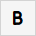
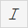
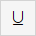
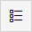
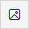
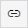
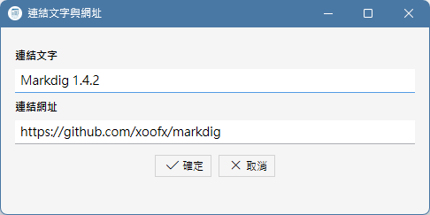

什麼是 Markdown 語法？
眾所周知地，HTML 是一種通用的標記語言，可以給平淡無奇的純文字稿加上豐富的樣式、排版、插入圖片和超連結，並且跨平台、跨軟體地 可以在各種裝置上被閱讀，然而，如果讓文件作者手動地在自己的文章中穿插這些 HTML 標記，不但會大幅降低文件的編寫效率，而且文件原 始檔案的可讀性非常差，總結來說就是兩個字：麻煩！
難道不能在極簡的純文字跟麻煩的 HTML 文件編纂當中取個折衷嗎？如果作者不需要複雜的圖文效果，只需要在純文字稿件加註一些直覺的格式 就夠了，例如顯示文件的標題、段落、條列就夠了，於是有了 Markdown 語法，Markdown 文件是純文字檔案，副檔名通常是 .md。可以透過 簡單的符號、例如跨號、井字號等等，快速地給某段文字加上格式設定，而且現在有許多文件發布平台都支援 Markdown 語法，例如 GitHub 和 HackMD，以及一些 AI 大語言模型，它們都能夠快速地理解 Markdown 文件並正確地顯示。
如果需要 Markdown 語法表，請參考 Markdown 線上文件，如果不熟悉語法也沒關係，上面的工具列可以讓你快速地 在編輯當中插入等效於以下 HTML 標籤的 Markdown 語法。
加上文字樣式
在 Markdown 語法當中，只要在文字前後加上 * 或 + 就可以把這段文字變成粗體或斜體等等樣式，使用者可以直接在編輯中鍵入，或是用滑鼠 選取文字以後，再點擊工具列按鈕來加上以下的樣式。
| 按鈕 | Markdow語法 | 等效HTML標籤 |
|---|---|---|
 |
**粗體** | <b>粗體</b> |
 |
*斜體* | <i>粗體</i> |
 |
++底線++ | <u>底線</u> |
如果要建立有數字或沒數字的條列，只要逐行鍵入條列的文字，選取多行文字之後，點擊以下工具列按鈕，就會逐行地變成條列。
等效 <ul> 標籤的 Markdown 語法:
- 第一項
- 第二項
- 第三項

等效 <ol> 標籤的 Markdown 語法:1 第一項
2 第二項
3 第三項
既然 * 或 + 以及各種括弧這些符號會讓部分文字被辨識為 Markdown 語法，並且被本軟體轉換為 HTML 標籤，那如果使用者在文字中就是要 使用這些符號的時候，為了避免程式誤判，可以在符號前加上反斜線「\」符號，以告知軟體忠實呈現這些符號的原貌。
加入標題與分隔線
本軟體使用的 Makedig 套件會自動地將文件中、連續的文字行以一個 <p> 標籤包裹為一個段落，此外，在要在文件中形成 h1～h4 的標題階層， 可以在標題文字行之前加入 1～4 個 # 字號，或是選取該行文字以後，點擊工具列上的 H1～H3 按鈕。
除此之外，如果要在文字行間加入如同 <hr /> 標籤的分隔行，點擊工具列上的 hr 按鈕。
如果想要讓某一段文字完全以原樣呈現，不解讀為 Markdown 語法或 HTML 語法，選取該段文字以後，點擊工具列上的 pre 按鈕，其效果等於 在文字前後加上了 <pre> 或 <code> 標籤，這個功能適合用來在文件中展示原始程式碼。
插入圖片與超連結
相較於純文字，HTML 網頁的優點就在於可以在文件中提供圖片與超連結，雖然 Markdown 文件是純文字，不能內嵌圖片檔案，但仍然提供了類似 <img> 標籤的語法，在文件中引用外部圖片，語法如下:

使用者不必去記憶這個語法，只要點擊工具列上的圖片按鈕，使用檔案對話框去選取要插入的圖片，軟體就會在目前編輯的文字中插入 Markdown 語法與圖片路徑。

在文件中插入超連結的 Markdown 語法也很類似，只不過少了一個驚嘆號:
[連結文字](連結網址)
同樣地，使用者也不必記憶這個語法，只要點擊工具列上的這個超連結按鈕，並且在以下的對話框中輸入連結文字和連結網址即可。

